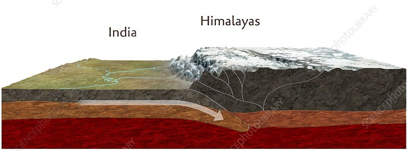
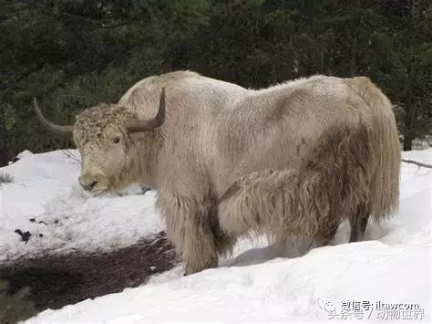

THE GREAT HIMALAYAS
The Himalayas, which literally means the abode of snow, is the youngest and the highest range
of fold mountains in the world. In India it extends in the east from the borders of Myanmar
to where the Indus divides it from the Hindukush and Karakoran ranges, covering a distance of
about 2500 km. The Himalayas consist of three parallel ranges, the Greater Himalayas known as
the Himadri, the Lesser Himalayas called the Himachal, and the Shivalik hills, which comprise
the foothills.

how himalayas were formed
The Himalayan mountain range and Tibetan plateau have formed as a result of the collision
between the Indian Plate and Eurasian Plate which began 50 million years ago and continues
today. 225 million years ago (Ma) India was a large island situated off the Australian coast
and separated from Asia by the Tethys Ocean.

Animals found in himalayas
-
Himalayan/Indian Black Bear

-
Red Panda

-
Himalayan Yak

-
Giant Panda

-
Himalayan Marmot

DIVISION OF THE HIMALAYAS
(touch to learn more)